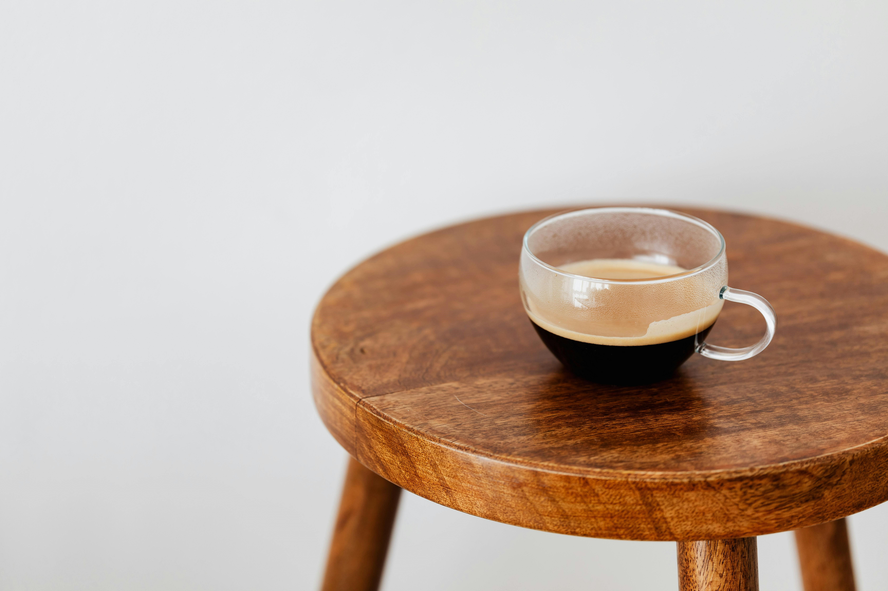

Americano
IT'S ORIGIN
The americano finds its origins in World War II. Interestingly, American soldiers stationed in Italy didn’t care for the very strong espresso that was favoured in the country, therefore they tried to recreate their beloved drip coffee from back home by adding water to the espresso shot. The result? The americano that we know and love today.
The americano also used to be iced. The process of making it was the same, but cold water was used instead and ice cubes were added.